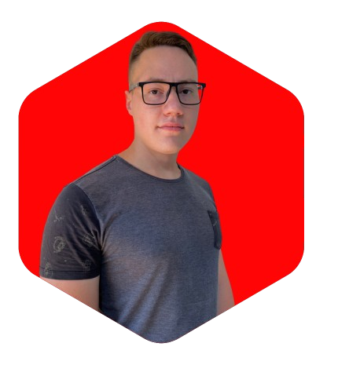

EM CENA: MINHA JORNADA
Minha jornada profissional é movida pela busca incessante por conhecimento e pelo desejo de aprimorar e expandir minhas habilidades técnicas.
Com determinação, estou sempre alinhado com meus objetivos, buscando não apenas atingi-los, mas superá-los.
Com um olhar sempre voltado para o futuro, estou ansioso por absorver novas habilidades que elevem o padrão dos aplicativos web que desenvolvo. Através dessas experiências, almejo criar produtos não apenas úteis, mas que também reflitam um alto padrão de qualidade no código.
Estou aberto a oportunidades que me permitam crescer profissionalmente e contribuir para o crescimento e sucesso da empresa que confiar em meu potencial.